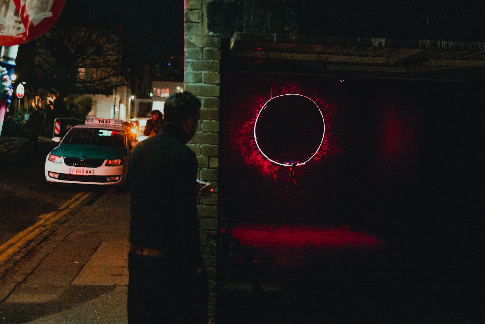

Slow Glow kinetic light
As the wood dies and rots away, the light will never fade. The woven structure resembles a cloud-like form made from wood. Contrast of the flow of branches against the industrial strip light. Eventually the surrounding branches will fall and the man-made light will remain. All the answers lie within nature, not technology.
" There's some unease in the shape of the light source and the position of it It's below the branches, protected. I feel enticed. I want to sit underneath the branches.
The liner nature of the light and the way the branches appear suspended above gives a sense of power to the light. It's demonstrating a stronger force than the branches yet you know they are heavy and unforgiving to human skin.
This power distribution is impactful and calming due to the form's simplicity. It feels knowing of itself. While I want to sit within it, I don't want to disturb it. I want to see it evolve; to observe a change in light strength, maybe also from a change in viewing position. The artificiality of the lightsource coming from a line rather than a circle lends to it's sense of distortion. With long exposure, you get extended light lines, this feels like one of them. Has it moved up? Has it moved down? Do I have measure of my own sense of movement? "
Industrial strip light, woven branches, black screws.
Slow Glow kinetic light

The beautiful flow of nature feeds the earth beneath it to create life once more.
Industrial strip light, woven branches, black screws.

Industrial strip light, woven branches, black screws.